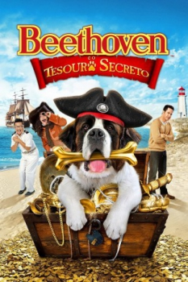

Beethoven e o Tesouro Secreto (2014)



Avaliação (TMDb):


5.9/10 (57 votos)
Avaliação (Usuário):
Outro Título:Beethoven's Treasure Tail (Título Original)
País:United States, 98 minutos
Idiomas falados:Inglês, Espanhol, Português
Gênero(s):Ação, Aventura, Família
Diretor(s):Ron Oliver
Codec:MPEG-2 (DVD)
Número: 157
Sinopse:
O cachorro mais famoso e bagunceiro do cinema retorna para mais uma aventura eletrizante na qual ele terá que encontrar um valioso tesouro.
Elenco:
Jonathan Silverman, Kristy Swanson, Jayne Eastwood, David DeLuise, Bretton Manley, Jeffrey Combs, Alec Mapa, Brian George, Udo Kier, Colin Mochrie
Tipo de mídia: DVD5,
Legendas: Inglês, Espanhol, Português
Alugado: Não
Tela: 2.35:1